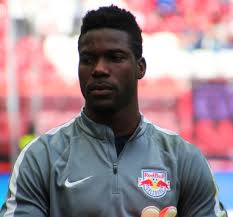
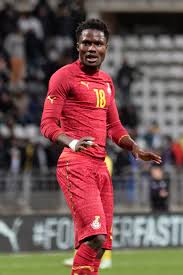
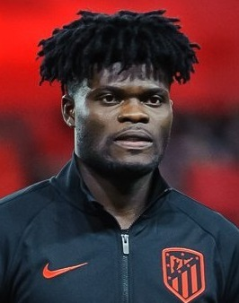
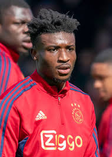
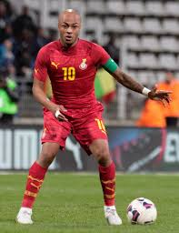
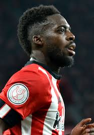

| Lawrence Ati-Zigi |
Portero |
29 |
Lawrence Ati-Zigi (Tamale, 29 de noviembre de 1996) es un portero ghanés que juega en el St. Gallen de Suiza. |
 |
| Daniel Amartey |
Defensa central |
30 |
Daniel Amartey (Accra, 21 de diciembre de 1994) es un defensa ghanés que juega en el Besiktas de Turquía. |
 |
| Thomas Partey |
Mediocampista |
32 |
Thomas Partey (Odumase Krobo, 13 de junio de 1993) es un mediocampista ghanés que juega en el Arsenal de Inglaterra. |
 |
| Kudus Mohammed |
Mediocampista |
25 |
Kudus Mohammed (Accra, 2 de agosto de 2000) es un mediocampista ghanés que juega en el West Ham United. |
 |
| Jordan Ayew |
Delantero |
34 |
Jordan Ayew (Marsella, Francia, 11 de septiembre de 1990) es un delantero ghanés que juega en el Crystal Palace. |
 |
| Inaki Williams |
Delantero |
31 |
Iñaki Williams (Bilbao, España, 15 de junio de 1994) es un delantero ghanés que juega en el Athletic Club de Bilbao. |
 |